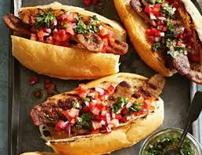

Chori argentino
que es un choripan argetino???
Un choripán argentino es un sándwich típico de la gastronomía de Argentina, que consiste en un chorizo
asado
a la parrilla, cortado al medio y servido dentro de un pan tipo francés o baguette. El choripán
generalmente
se acompaña con salsa chimichurri o salsa criolla, que son condimentos clásicos en el asado argentino

Ingredientes
los ingredientes para preparar un buen chori son:
Primero que nada el chorizo, Preferentemente de cerdo, aunque puede ser mixto (cerdo y vaca) o incluso
de otros tipos de
carne.
El pan Pan francés, baguette o pan tipo flauta, con una textura crujiente por fuera y suave por dentro.
El chimichurri no puede faltar. Salsa típica argentina que lleva ajo, perejil, orégano, vinagre, aceite
y ají molido,
entre otros ingredientes. Es opcional, pero muy popular.
La salsa criolla que puede o no llevarse ya depende de cada uno. Mezcla de tomate, cebolla, pimiento
morrón, vinagre, aceite y sal.
Despues podemos ponerle lechuga, tomate o alguna otra verdura. Aunque no es lo tradicional, algunas
versiones modernas pueden
incluir estos ingredientes.
Preparacion
para poder preparar un buen chori debemos:
Prender la parrilla con carbón o leña. Lo ideal es tener una brasa moderada, no muy
fuerte, para cocinar los chorizos de manera pareja.
Colocar los chorizos en la parrilla cuando las brasas estén listas. Deben cocinarse a
fuego medio por unos 15-20 minutos, dándoles vuelta cada tanto para que se cocinen de manera uniforme y
adquieran ese dorado crujiente característico. El chorizo debe quedar bien cocido por dentro pero
jugoso.
Calentar el pan (opcional), Si te gusta, puedes calentar ligeramente los panes sobre la parrilla o en el
horno, lo suficiente para que se tuesten un poco por fuera y queden más crocantes.
Una vez que los chorizos estén listos, sácalos de la parrilla y córtalos al medio
longitudinalmente, sin llegar a separarlos completamente (esto facilita comer el choripán).
y por ultimo Coloca el chorizo en el pan y añade chimichurri o salsa criolla al gusto. También
puedes dejar que cada persona agregue el aderezo que prefiera y a disfrutar.